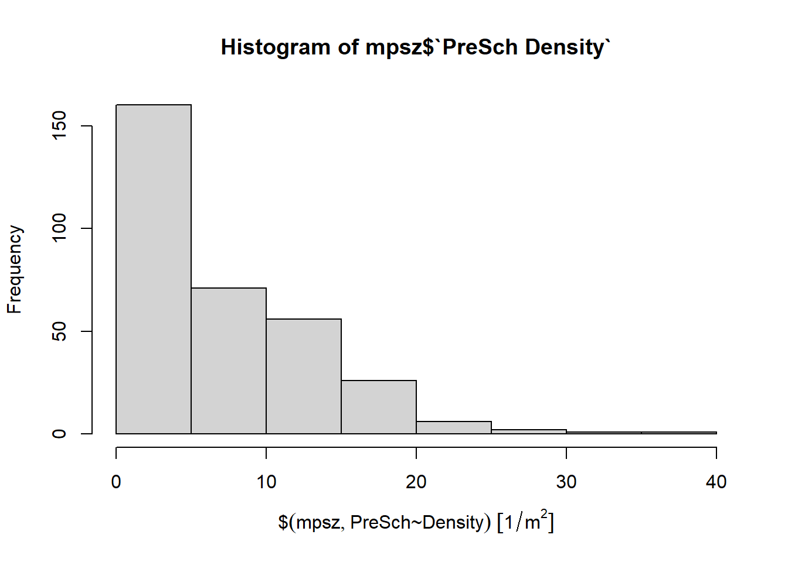
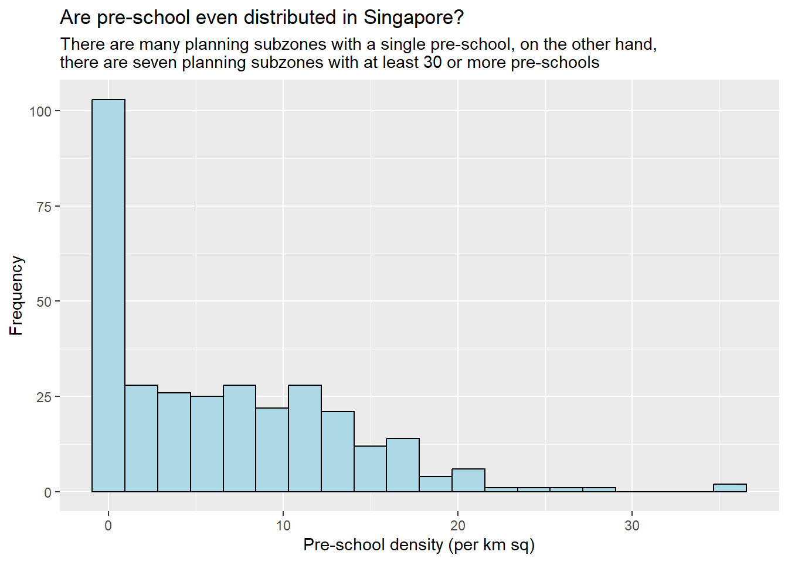
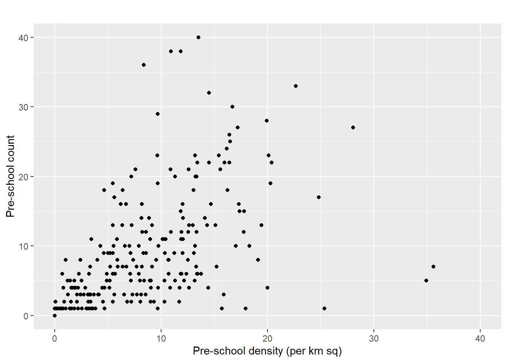

pacman::p_load(sf, tidyverse)Hands-on 1A | Geospatial Data Wrangling with R
In this exercise, we will learn to use R for geospatial data handling, including importing, transforming, wrangling, and visualizing data with sf, tidyverse, and ggplot2.
1 Learning Outcome
- installing and loading sf and tidyverse packages into R environment,
- importing geospatial data by using appropriate functions of sf package,
- importing aspatial data by using appropriate function of readr package,
- exploring the content of simple feature data frame by using appropriate Base R and sf functions,
- assigning or transforming coordinate systems by using using appropriate sf functions,
- converting an aspatial data into a sf data frame by using appropriate function of sf package,
- performing geoprocessing tasks by using appropriate functions of sf package,
- performing data wrangling tasks by using appropriate functions of dplyr package and
- performing Exploratory Data Analysis (EDA) by using appropriate functions from ggplot2 package.
2 The Data
| Dataset | Source | Description |
|---|---|---|
| Master Plan 2014 Subzone Boundary (Web) | data.gov.sg | Geospatial boundaries for Singapore’s planning subzones. |
| Pre-Schools Location | data.gov.sg | Location data for pre-schools in Singapore. |
| Cycling Path | LTA DataMall | Geospatial data for cycling paths in Singapore. |
| Singapore Airbnb Listings | Inside Airbnb | Latest listing data for Airbnb properties in Singapore. |
3 Installing and Loading the R Packages
Two main R packages will be used in this exercise:
| Package | Purpose | Use Case in Exercise |
|---|---|---|
| sf | Importing, managing, and processing geospatial data. | Handling and processing geospatial data in R. |
| tidyverse | Comprehensive set of tools for data science tasks. | Importing, wrangling, and visualizing data. |
3.1 Tidyverse Sub-packages
The tidyverse package includes the following sub-packages used in this exercise:
| Sub-package | Purpose |
|---|---|
| readr | Importing CSV data. |
| readxl | Importing Excel worksheets. |
| tidyr | Manipulating and tidying data. |
| dplyr | Transforming and wrangling data. |
| ggplot2 | Visualizing data. |
To install and load these packages, use the following code:
4 Import Geospatial Data
The code block below uses st_read() function of sf package to import the MP14_SUBZONE_WEB_PL shapefile into R as a polygon feature data frame.
-
dsnrefers to data source name -
layerpoints to the file name. - more details: st_read function - RDocumentation
4.1 Import polygon feature data in shapefile format
mpsz = st_read(dsn = "data/geospatial",
layer = "MP14_SUBZONE_WEB_PL")Reading layer `MP14_SUBZONE_WEB_PL' from data source
`D:\ngoclinhnguyen-2806\ISSS626-GAA\Hands-on_Ex\Hands-on_Ex01\data\geospatial'
using driver `ESRI Shapefile'
Simple feature collection with 323 features and 15 fields
Geometry type: MULTIPOLYGON
Dimension: XY
Bounding box: xmin: 2667.538 ymin: 15748.72 xmax: 56396.44 ymax: 50256.33
Projected CRS: SVY21
Note
Output Explanation: The geospatial objects are multipolygon features. There are a total of 323 multipolygon features and 15 fields in mpsz simple feature data frame. mpsz is in svy21 projected coordinates systems. The bounding box provides the x extend and y extend of the data.
4.2 Import polyline feature data in shapefile format
The code block below uses st_read() function of sf package to import CyclingPath shapefile into R as line feature data frame.
cyclingpath = st_read(dsn = "data/geospatial",
layer = "CyclingPathGazette")Reading layer `CyclingPathGazette' from data source
`D:\ngoclinhnguyen-2806\ISSS626-GAA\Hands-on_Ex\Hands-on_Ex01\data\geospatial'
using driver `ESRI Shapefile'
Simple feature collection with 4651 features and 19 fields
Geometry type: MULTILINESTRING
Dimension: XY
Bounding box: xmin: 11721.1 ymin: 27550.13 xmax: 42809.37 ymax: 49702.59
Projected CRS: SVY21
Note
Output Explanation: There are a total of 3138 features and 2 fields in cyclingpath linestring feature data frame and it is in svy21 projected coordinates system too.
4.3 Import GIS data in kml format
As compared to st_read for shapefiles, we need to pass the file extension when importing kml files.
preschool = st_read("data/geospatial/PreSchoolsLocation.kml")Reading layer `PRESCHOOLS_LOCATION' from data source
`D:\ngoclinhnguyen-2806\ISSS626-GAA\Hands-on_Ex\Hands-on_Ex01\data\geospatial\PreSchoolsLocation.kml'
using driver `KML'
Simple feature collection with 2290 features and 2 fields
Geometry type: POINT
Dimension: XYZ
Bounding box: xmin: 103.6878 ymin: 1.247759 xmax: 103.9897 ymax: 1.462134
z_range: zmin: 0 zmax: 0
Geodetic CRS: WGS 84
Note
Output Explanation: The preschool is a point feature data frame. There are a total of 2290 features and 2 fields. Different from the previous two simple feature data frame, preschool is in wgs84 coordinates system.
5 Checking the Content of A Simple Feature Data Frame
There are different ways to retrieve information related to the content of a simple feature data frame.
5.1 Working with st_geometry()
The column in the sf data.frame that contains the geometries is a list, of class sfc.
The code block below shows the general way to use st_geometry(). Alternative is mpsz$geom or mpsz[[1]] to retrieve the geometry list-column.
st_geometry(mpsz)Geometry set for 323 features
Geometry type: MULTIPOLYGON
Dimension: XY
Bounding box: xmin: 2667.538 ymin: 15748.72 xmax: 56396.44 ymax: 50256.33
Projected CRS: SVY21
First 5 geometries:
Note
Output Explanation: The print only displays basic information of the feature class such as type of geometry, the geographic extent of the features and the coordinate system of the data.
5.2 Working with glimpse()
To learn more about the associated attribute information in the data frame, we can use glimpse from dplyr.
glimpse(mpsz)Rows: 323
Columns: 16
$ OBJECTID <int> 1, 2, 3, 4, 5, 6, 7, 8, 9, 10, 11, 12, 13, 14, 15, 16, 17, …
$ SUBZONE_NO <int> 1, 1, 3, 8, 3, 7, 9, 2, 13, 7, 12, 6, 1, 5, 1, 1, 3, 2, 2, …
$ SUBZONE_N <chr> "MARINA SOUTH", "PEARL'S HILL", "BOAT QUAY", "HENDERSON HIL…
$ SUBZONE_C <chr> "MSSZ01", "OTSZ01", "SRSZ03", "BMSZ08", "BMSZ03", "BMSZ07",…
$ CA_IND <chr> "Y", "Y", "Y", "N", "N", "N", "N", "Y", "N", "N", "N", "N",…
$ PLN_AREA_N <chr> "MARINA SOUTH", "OUTRAM", "SINGAPORE RIVER", "BUKIT MERAH",…
$ PLN_AREA_C <chr> "MS", "OT", "SR", "BM", "BM", "BM", "BM", "SR", "QT", "QT",…
$ REGION_N <chr> "CENTRAL REGION", "CENTRAL REGION", "CENTRAL REGION", "CENT…
$ REGION_C <chr> "CR", "CR", "CR", "CR", "CR", "CR", "CR", "CR", "CR", "CR",…
$ INC_CRC <chr> "5ED7EB253F99252E", "8C7149B9EB32EEFC", "C35FEFF02B13E0E5",…
$ FMEL_UPD_D <date> 2014-12-05, 2014-12-05, 2014-12-05, 2014-12-05, 2014-12-05…
$ X_ADDR <dbl> 31595.84, 28679.06, 29654.96, 26782.83, 26201.96, 25358.82,…
$ Y_ADDR <dbl> 29220.19, 29782.05, 29974.66, 29933.77, 30005.70, 29991.38,…
$ SHAPE_Leng <dbl> 5267.381, 3506.107, 1740.926, 3313.625, 2825.594, 4428.913,…
$ SHAPE_Area <dbl> 1630379.27, 559816.25, 160807.50, 595428.89, 387429.44, 103…
$ geometry <MULTIPOLYGON [m]> MULTIPOLYGON (((31495.56 30..., MULTIPOLYGON (…
Note
Output Explanation: glimpse() report reveals the data type of each fields. For example FMEL-UPD_D field is in date data type and X_ADDR, Y_ADDR, SHAPE_L and SHAPE_AREA fields are all in double-precision values.
5.3 Working with head()
To reveal complete information of a feature object, we can use head() from R.
head(mpsz, n=5)Simple feature collection with 5 features and 15 fields
Geometry type: MULTIPOLYGON
Dimension: XY
Bounding box: xmin: 25867.68 ymin: 28369.47 xmax: 32362.39 ymax: 30435.54
Projected CRS: SVY21
OBJECTID SUBZONE_NO SUBZONE_N SUBZONE_C CA_IND PLN_AREA_N
1 1 1 MARINA SOUTH MSSZ01 Y MARINA SOUTH
2 2 1 PEARL'S HILL OTSZ01 Y OUTRAM
3 3 3 BOAT QUAY SRSZ03 Y SINGAPORE RIVER
4 4 8 HENDERSON HILL BMSZ08 N BUKIT MERAH
5 5 3 REDHILL BMSZ03 N BUKIT MERAH
PLN_AREA_C REGION_N REGION_C INC_CRC FMEL_UPD_D X_ADDR
1 MS CENTRAL REGION CR 5ED7EB253F99252E 2014-12-05 31595.84
2 OT CENTRAL REGION CR 8C7149B9EB32EEFC 2014-12-05 28679.06
3 SR CENTRAL REGION CR C35FEFF02B13E0E5 2014-12-05 29654.96
4 BM CENTRAL REGION CR 3775D82C5DDBEFBD 2014-12-05 26782.83
5 BM CENTRAL REGION CR 85D9ABEF0A40678F 2014-12-05 26201.96
Y_ADDR SHAPE_Leng SHAPE_Area geometry
1 29220.19 5267.381 1630379.3 MULTIPOLYGON (((31495.56 30...
2 29782.05 3506.107 559816.2 MULTIPOLYGON (((29092.28 30...
3 29974.66 1740.926 160807.5 MULTIPOLYGON (((29932.33 29...
4 29933.77 3313.625 595428.9 MULTIPOLYGON (((27131.28 30...
5 30005.70 2825.594 387429.4 MULTIPOLYGON (((26451.03 30...
Note
Output Explanation: It shows the top 5 rows from mpsz.
6 Plotting the Geospatial Data
This section covers visualization of geospatial features using plot() of R graphic.
plot(mpsz)
Note
Output Explanation: The default plot of an sf object is a multi-plot of all attributes, up to a reasonable maximum as shown above.
Alternatively, we can also choose the plot the sf object by using a specific attribute as shown in the code block below.
plot(mpsz["PLN_AREA_N"])
Tip
For high cartographic quality plot, other R package such as tmap should be used.
Now, let us plot the preschool layer ontop of the mpsz layer by using the code chunk below.

7 Working with Map Projection
Map projection is an important property of a geospatial data. In order to perform geoprocessing using two geospatial data, we need to ensure that both geospatial data are projected using similar coordinate system.
Projection transformation is a method to project a simple feature data frame from one coordinate system to another coordinate system.
7.1 Assigning EPSG code to a simple feature data frame
One of the common issue that can happen during importing geospatial data into R is that the coordinate system of the source data was either missing (such as due to missing .proj for ESRI shapefile) or wrongly assigned during the importing process.
This is an example the coordinate system of mpsz simple feature data frame by using st_crs() of sf package as shown in the code block below.
st_crs(mpsz)Coordinate Reference System:
User input: SVY21
wkt:
PROJCRS["SVY21",
BASEGEOGCRS["SVY21[WGS84]",
DATUM["World Geodetic System 1984",
ELLIPSOID["WGS 84",6378137,298.257223563,
LENGTHUNIT["metre",1]],
ID["EPSG",6326]],
PRIMEM["Greenwich",0,
ANGLEUNIT["Degree",0.0174532925199433]]],
CONVERSION["unnamed",
METHOD["Transverse Mercator",
ID["EPSG",9807]],
PARAMETER["Latitude of natural origin",1.36666666666667,
ANGLEUNIT["Degree",0.0174532925199433],
ID["EPSG",8801]],
PARAMETER["Longitude of natural origin",103.833333333333,
ANGLEUNIT["Degree",0.0174532925199433],
ID["EPSG",8802]],
PARAMETER["Scale factor at natural origin",1,
SCALEUNIT["unity",1],
ID["EPSG",8805]],
PARAMETER["False easting",28001.642,
LENGTHUNIT["metre",1],
ID["EPSG",8806]],
PARAMETER["False northing",38744.572,
LENGTHUNIT["metre",1],
ID["EPSG",8807]]],
CS[Cartesian,2],
AXIS["(E)",east,
ORDER[1],
LENGTHUNIT["metre",1,
ID["EPSG",9001]]],
AXIS["(N)",north,
ORDER[2],
LENGTHUNIT["metre",1,
ID["EPSG",9001]]]]Although mpsz data frame is projected in svy21 but when we read until the end of the print, it indicates that the EPSG is 9001. This is a wrong EPSG code because the correct EPSG code for svy21 should be 3414.
In order to assign the correct EPSG code to mpsz data frame, st_set_crs() of sf package is used as shown in the code block below.
mpsz <- st_set_crs(mpsz, 3414)st_crs(mpsz)Coordinate Reference System:
User input: EPSG:3414
wkt:
PROJCRS["SVY21 / Singapore TM",
BASEGEOGCRS["SVY21",
DATUM["SVY21",
ELLIPSOID["WGS 84",6378137,298.257223563,
LENGTHUNIT["metre",1]]],
PRIMEM["Greenwich",0,
ANGLEUNIT["degree",0.0174532925199433]],
ID["EPSG",4757]],
CONVERSION["Singapore Transverse Mercator",
METHOD["Transverse Mercator",
ID["EPSG",9807]],
PARAMETER["Latitude of natural origin",1.36666666666667,
ANGLEUNIT["degree",0.0174532925199433],
ID["EPSG",8801]],
PARAMETER["Longitude of natural origin",103.833333333333,
ANGLEUNIT["degree",0.0174532925199433],
ID["EPSG",8802]],
PARAMETER["Scale factor at natural origin",1,
SCALEUNIT["unity",1],
ID["EPSG",8805]],
PARAMETER["False easting",28001.642,
LENGTHUNIT["metre",1],
ID["EPSG",8806]],
PARAMETER["False northing",38744.572,
LENGTHUNIT["metre",1],
ID["EPSG",8807]]],
CS[Cartesian,2],
AXIS["northing (N)",north,
ORDER[1],
LENGTHUNIT["metre",1]],
AXIS["easting (E)",east,
ORDER[2],
LENGTHUNIT["metre",1]],
USAGE[
SCOPE["Cadastre, engineering survey, topographic mapping."],
AREA["Singapore - onshore and offshore."],
BBOX[1.13,103.59,1.47,104.07]],
ID["EPSG",3414]]Output Explanation: Note that the EPSG code is 3414 now.
7.2 Transforming the projection of preschool from wgs84 to svy21.
It is very common in geospatial analytics to transform the original data from geographic coordinate system (gcs) to projected coordinate system (pcs). This is because geographic coordinate system is not appropriate if the analysis need to use distance or/and area measurements.
Let us take preschool simple feature data frame as an example. The print below reveals that it is in wgs84 coordinate system.
This is a scenario that st_set_crs() is not appropriate and st_transform() of sf package should be used. This is because we need to reproject preschool from one coordinate system to another coordinate system mathemetically.
Let us perform the projection transformation by using the code block below.
preschool <- st_transform(preschool,
crs = 3414)
Note
In practice, we need find out the appropriate project coordinate system to use before performing the projection transformation.
Next, let us display the content of preschool3414 sf data frame as shown below.
Geometry set for 2290 features
Geometry type: POINT
Dimension: XYZ
Bounding box: xmin: 11810.03 ymin: 25596.33 xmax: 45404.24 ymax: 49300.88
z_range: zmin: 0 zmax: 0
Projected CRS: SVY21 / Singapore TM
First 5 geometries:
Note
Output Explanation: Note that it is in svy21 projected coordinate system now. Furthermore, for the Bounding box:, the values are greater than 0-360 range of decimal degree commonly used by most of the geographic coordinate systems.
Now, let us try to plot the preschool layer ontop of mpsz layer again by using the similar code chunk you used earlier.
8 Importing and Converting An Aspatial Data
In this section, we will learn how to process aspatial data such as listing of Inside Airbnb. It is not a geospatial data but among the data fields, there are two fields that capture the x- and y-coordinates of the data points.
We will first import the aspatial data and save it as a tibble dataframe and convert it into a simple feature dataframe.
8.1 Import the aspatial data
Since listings data set is in csv file format, we will use read_csv() of readr package to import listing.csv as shown the code block below. The output R object is called listings and it is a tibble data frame.
listings <- read_csv("data/aspatial/listings.csv")After importing the data file into R, it is important for us to examine if the data file has been imported correctly.
The code block below shows list() of Base R instead of glimpse() is used to do the job.
list(listings)[[1]]
# A tibble: 3,659 × 18
id name host_id host_name neighbourhood_group neighbourhood latitude
<dbl> <chr> <dbl> <chr> <chr> <chr> <dbl>
1 71609 Ensuite … 367042 Belinda East Region Tampines 1.35
2 71896 B&B Roo… 367042 Belinda East Region Tampines 1.35
3 71903 Room 2-n… 367042 Belinda East Region Tampines 1.35
4 275343 10min wa… 1439258 Kay Central Region Bukit Merah 1.29
5 275344 15 mins … 1439258 Kay Central Region Bukit Merah 1.29
6 294281 5 mins w… 1521514 Elizabeth Central Region Newton 1.31
7 324945 Comforta… 1439258 Kay Central Region Bukit Merah 1.29
8 330095 Relaxing… 1439258 Kay Central Region Bukit Merah 1.29
9 344803 Budget s… 367042 Belinda East Region Tampines 1.35
10 369141 5mins fr… 1521514 Elizabeth Central Region Newton 1.31
# ℹ 3,649 more rows
# ℹ 11 more variables: longitude <dbl>, room_type <chr>, price <dbl>,
# minimum_nights <dbl>, number_of_reviews <dbl>, last_review <date>,
# reviews_per_month <dbl>, calculated_host_listings_count <dbl>,
# availability_365 <dbl>, number_of_reviews_ltm <dbl>, license <chr>
Note
Output Explanation: The. listing tibble data frame consists of 4252 rows and 16 columns. We will use the latitude and longtitude fields. Note that they are in decimal degree format. As a best guess, we will assume that the data is in wgs84 Geographic Coordinate System.
The code block below converts listing data frame into a simple feature data frame by using st_as_sf() of sf packages
listings_sf <- st_as_sf(listings,
coords = c("longitude", "latitude"),
crs=4326) %>%
st_transform(crs = 3414)Things to learn from the arguments above:
- coords: argument requires you to provide the column name of the x-coordinates first then followed by the column name of the y-coordinates.
- crs: argument requires you to provide the coordinates system in epsg format. EPSG: 4326 is wgs84 Geographic Coordinate System and EPSG: 3414 is Singapore SVY21 Projected Coordinate System. You can search for other country’s epsg code by referring to epsg.io.
- %>%: is used to nest st_transform() to transform the newly created simple feature data frame into svy21 projected coordinates system.
Let us examine the content of this newly created simple feature data frame.
glimpse(listings_sf)Rows: 3,659
Columns: 17
$ id <dbl> 71609, 71896, 71903, 275343, 275344, 29…
$ name <chr> "Ensuite Room (Room 1 & 2) near EXPO", …
$ host_id <dbl> 367042, 367042, 367042, 1439258, 143925…
$ host_name <chr> "Belinda", "Belinda", "Belinda", "Kay",…
$ neighbourhood_group <chr> "East Region", "East Region", "East Reg…
$ neighbourhood <chr> "Tampines", "Tampines", "Tampines", "Bu…
$ room_type <chr> "Private room", "Private room", "Privat…
$ price <dbl> 143, NA, 76, NA, NA, 85, NA, NA, 41, 79…
$ minimum_nights <dbl> 92, 92, 92, 180, 180, 92, 180, 180, 92,…
$ number_of_reviews <dbl> 19, 24, 46, 20, 16, 131, 17, 5, 60, 81,…
$ last_review <date> 2020-01-17, 2019-10-13, 2020-01-09, 20…
$ reviews_per_month <dbl> 0.12, 0.14, 0.27, 0.13, 0.10, 0.80, 0.1…
$ calculated_host_listings_count <dbl> 5, 5, 5, 58, 58, 7, 58, 58, 5, 7, 7, 1,…
$ availability_365 <dbl> 90, 79, 90, 153, 153, 365, 153, 153, 36…
$ number_of_reviews_ltm <dbl> 0, 0, 0, 0, 0, 0, 0, 0, 0, 0, 0, 0, 1, …
$ license <chr> NA, NA, NA, "S0399", "S0399", NA, "S039…
$ geometry <POINT [m]> POINT (41972.5 36390.05), POINT (…
Note
Output Explanation:: The table above shows the content of listing_sf. Notice that a new column called geometry has been added into the data frame. On the other hand, the longitude and latitude columns have been dropped from the data frame. Note that they are in decimal degree format. As a best guess, we will assume that the data is in wgs84 Geographic Coordinate System.
8.2 Creating a simple feature data frame from an aspatial data frame
The code chunk below converts listing data frame into a simple feature data frame by using st_as_sf() of sf packages
listings_sf <- st_as_sf(listings,
coords = c("longitude", "latitude"),
crs=4326) %>%
st_transform(crs = 3414)Things to learn from the arguments above:
- coords argument requires you to provide the column name of the x-coordinates first then followed by the column name of the y-coordinates.
- crs argument requires you to provide the coordinates system in epsg format. EPSG: 4326 is wgs84 Geographic Coordinate System and EPSG: 3414 is Singapore SVY21 Projected Coordinate System. You can search for other country’s epsg code by referring to epsg.io.
- %>% is used to nest st_transform() to transform the newly created simple feature data frame into svy21 projected coordinates system.
Let us examine the content of this newly created simple feature data frame.
glimpse(listings_sf)Rows: 3,659
Columns: 17
$ id <dbl> 71609, 71896, 71903, 275343, 275344, 29…
$ name <chr> "Ensuite Room (Room 1 & 2) near EXPO", …
$ host_id <dbl> 367042, 367042, 367042, 1439258, 143925…
$ host_name <chr> "Belinda", "Belinda", "Belinda", "Kay",…
$ neighbourhood_group <chr> "East Region", "East Region", "East Reg…
$ neighbourhood <chr> "Tampines", "Tampines", "Tampines", "Bu…
$ room_type <chr> "Private room", "Private room", "Privat…
$ price <dbl> 143, NA, 76, NA, NA, 85, NA, NA, 41, 79…
$ minimum_nights <dbl> 92, 92, 92, 180, 180, 92, 180, 180, 92,…
$ number_of_reviews <dbl> 19, 24, 46, 20, 16, 131, 17, 5, 60, 81,…
$ last_review <date> 2020-01-17, 2019-10-13, 2020-01-09, 20…
$ reviews_per_month <dbl> 0.12, 0.14, 0.27, 0.13, 0.10, 0.80, 0.1…
$ calculated_host_listings_count <dbl> 5, 5, 5, 58, 58, 7, 58, 58, 5, 7, 7, 1,…
$ availability_365 <dbl> 90, 79, 90, 153, 153, 365, 153, 153, 36…
$ number_of_reviews_ltm <dbl> 0, 0, 0, 0, 0, 0, 0, 0, 0, 0, 0, 0, 1, …
$ license <chr> NA, NA, NA, "S0399", "S0399", NA, "S039…
$ geometry <POINT [m]> POINT (41972.5 36390.05), POINT (…Table above shows the content of listing_sf. Notice that a new column called geometry has been added into the data frame. On the other hand, the longitude and latitude columns have been dropped from the data frame.
::: Try plotting listing_sf layer on top of mpsz layer :::

9 Geoprocessing with sf
In addition to offering tools for managing geospatial data (such as importing, exporting, assigning, and transforming projections), the sf package also includes a wide range of geoprocessing functions for GIS analysis.
9.1 Use case 1: Land acquisition analysis
9.1.1 Scenario:
The authority is planning to upgrade the exiting cycling path. To do so, they need to acquire 5 metres of reserved land on the both sides of the existing cycling path. You are tasked to determine the extend of the land need to be acquired and their total area.
9.1.2 Solution:
Method 1
Step 1: The st_buffer() function of the sf package is used to compute the 5-meter buffers around the cycling paths.
cyclingpath <- st_transform(cyclingpath, crs = 3414)
buffer_cycling <- st_buffer(cyclingpath,
dist=5, nQuadSegs = 30)Step 2: Calculate the area of the buffers as shown in the code block below.
buffer_cycling$AREA <- st_area(buffer_cycling)Step 3: sum() of Base R will be used to derive the total land involved
sum(buffer_cycling$AREA)3561648 [m^2]Method 2
We can also create a plot showing the buffer by a selected planning subzone.
Assuming that we are interested on the land acquisition in Tampines West planning subzone.
Step 1: filter() of dplyr package will be used to extract polygon feature of Tampines West by using the code chunk below.
mpsz_selected <- mpsz %>%
filter(SUBZONE_N == "TAMPINES WEST") Step 2: st_intersection() of sf package will be used to clip cycling buffers within Tampines West planning subzone.
buffer_cycling_selected <- st_intersection(
st_geometry(buffer_cycling),
st_geometry(mpsz_selected)
)Step 3: plot() of R Graphic will be used to create the plot as shown below.
9.2 Use case 2: To determine the number of pre-schools by planning subzone
9.2.1 Scenario:
The authority requires a count of pre-schools for each planning subzone to support forward planning. Using R and the sf package, perform the necessary geoprocessing to compute these counts and present the results clearly.
9.2.2 Solution:
The code block below performs two operations at one go.
- identify pre-schools located inside each Planning Subzone by using st_intersects().
- length() of Base R is used to calculate numbers of pre-schools that fall inside each planning subzone.
mpsz$`PreSch Count`<- lengths(st_intersects(mpsz, preschool))Warning: You should not confuse with st_intersection().
The summary statistics of the newly derived PreSch Count field by using summary() is shown in the code block below.
summary(mpsz$`PreSch Count`) Min. 1st Qu. Median Mean 3rd Qu. Max.
0.00 0.00 4.00 7.09 10.00 72.00 Next top_n() from dplyr package is used with n=1 to list the planning subzone with the highest number of pre-school.
top_n(mpsz, 1, `PreSch Count`)Simple feature collection with 1 feature and 16 fields
Geometry type: MULTIPOLYGON
Dimension: XY
Bounding box: xmin: 39655.33 ymin: 35966 xmax: 42940.57 ymax: 38622.37
Projected CRS: SVY21 / Singapore TM
OBJECTID SUBZONE_NO SUBZONE_N SUBZONE_C CA_IND PLN_AREA_N PLN_AREA_C
1 189 2 TAMPINES EAST TMSZ02 N TAMPINES TM
REGION_N REGION_C INC_CRC FMEL_UPD_D X_ADDR Y_ADDR SHAPE_Leng
1 EAST REGION ER 21658EAAF84F4D8D 2014-12-05 41122.55 37392.39 10180.62
SHAPE_Area geometry PreSch Count
1 4339824 MULTIPOLYGON (((42196.76 38... 72Exercise: Calculate the density of pre-school by planning subzone.
To determine the density of pre-schools by planning subzone, the st_area() function from the sf package is used to calculate the area of each planning subzone, and the result is stored in a new Area column.
mpsz$Area <- mpsz %>%
st_area()Next, mutate() of dplyr package is used to compute the density by using the code block below.
mpsz <- mpsz %>%
mutate(`PreSch Density` = `PreSch Count`/Area * 1000000)10 Exploratory Data Analysis (EDA)
In this section, we will learn how to use ggplot2 to create functional and yet truthful statistical graphs for EDA purposes.
- We will plot a histogram to reveal the distribution of
PreSch Density. Conventionally, hist() of R Graphics will be used as shown in the code block below.
hist(mpsz$`PreSch Density`)
Although the syntax is very easy to use however the output is far from meeting publication quality. Furthermore, the function has limited room for further customisation.
In the code block below, appropriate ggplot2 functions will be used.
ggplot(data=mpsz,
aes(x= as.numeric(`PreSch Density`)))+
geom_histogram(bins=20,
color="black",
fill="light blue") +
labs(title = "Are pre-school even distributed in Singapore?",
subtitle= "There are many planning subzones with a single pre-school, on the other hand, \nthere are seven planning subzones with at least 30 or more pre-schools",
x = "Pre-school density (per km sq)",
y = "Frequency")
In the code chunk below, appropriate ggplot2 functions are used to plot a scatterplot showing the relationship between Pre-school Density and Pre-school Count.
ggplot(data=mpsz,
aes(y = `PreSch Count`,
x= as.numeric(`PreSch Density`)))+
geom_point(color="black",
fill="light blue") +
xlim(0, 40) +
ylim(0, 40) +
labs(title = "",
x = "Pre-school density (per km sq)",
y = "Pre-school count")
Note
Output Explanation: The scatterplot shows a positive relationship between pre-school density (per km²) and pre-school count, showing that areas with higher density tend to have a greater number of pre-schools.